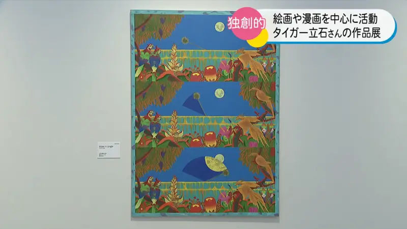
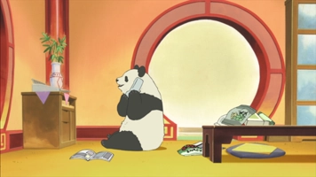
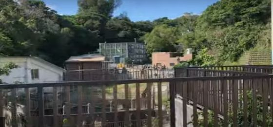
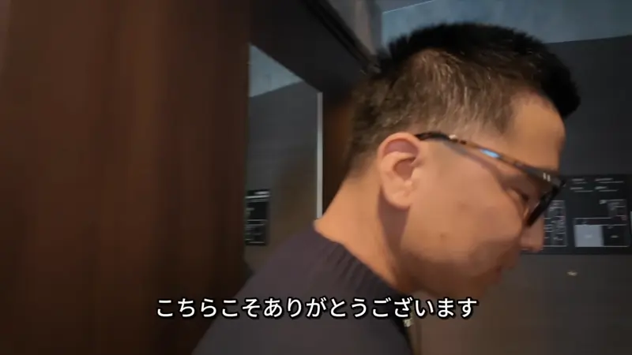
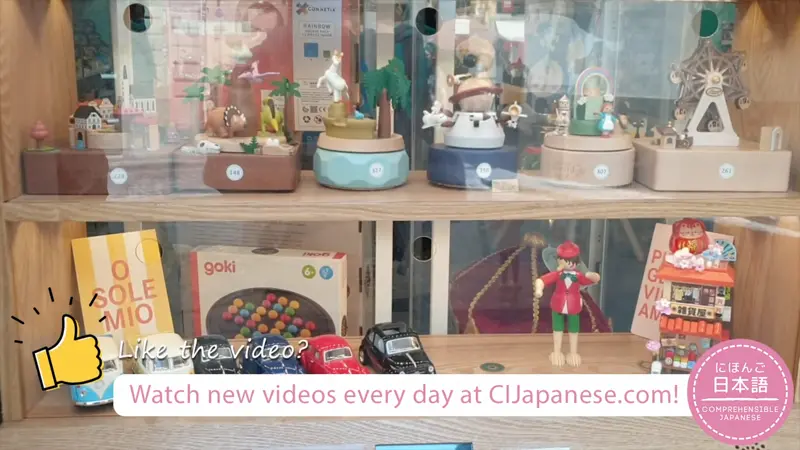
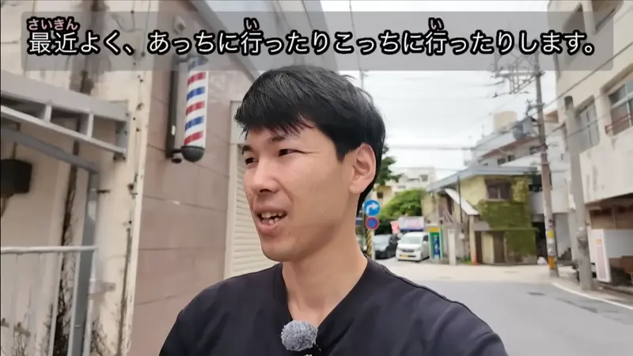
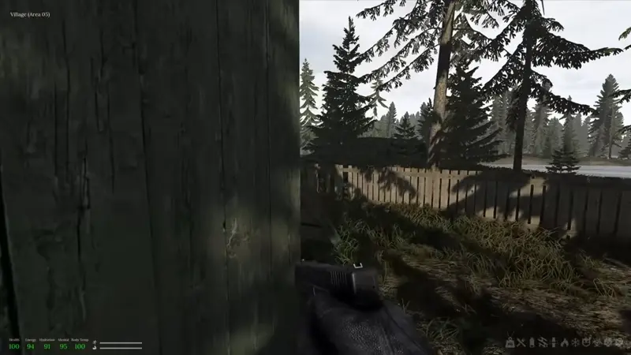

こちら・そちら・あちら

YouTube · video
こちらは、絵画と漫画を融合させた作品です。
"This is a work that blends painting and manga."
こちら, そちら and あちら point at a side or a direction: "this way", "that way". Same split as ここ・そこ・あそこ: こちら is near me, そちら is near you, あちら is far from both of us.
They're also the polite "here" and "this one". Staff, guides and presenters say こちら instead of ここ or これ. She's showing a piece to visitors, so こちらは answers "What's this one?"
They work like nouns: こちらは, こちらに, こちらの + noun. Casual versions: こっち・そっち・あっち, same meaning.
JoJo's Bizarre Adventure · Season 1, Episode 1
ひでぇ、こっちのやつも即死だな。
"Awful. This one here died on the spot too."
Casual version: こっち instead of こちら. こっちのやつ = "the guy on this side". Use it with friends or when talking to yourself.
Examples
You arrive at a hotel. The staff member walks ahead and turns to you.
こちらへどうぞ。
"This way, please."
The direction they're going: こちら.
PoliteYou call a bakery to ask when they close.
そちらは何時までですか？
"Until what time are you open?"
On the phone, そちら = your side, your shop.
PoliteWith a friend, you point at a café across the street.
あっちのカフェ、行こう。
"Let's go to that café over there."
Far from both of you: あっち (casual あちら).
CasualWith and without
ここは会議室です。
"This is the meeting room." Plain, fine with a coworker.
こちらは会議室です。
"This is the meeting room." Polite, like staff showing a guest around.
Sentence mining

Shirokuma Cafe · Season 1, Episode 1
もしもし、そちらでインテリアコーディネーターも募集してますよね。
"Hello, you're also hiring interior coordinators, right?"
On the phone, そちら = the other side of the call, their company. そちらで = at your place.

YouTube · Okinawa Kodomo no Kuni zoo
そしてこちらに行くと、きりんも上から見れるような。
"And if you go this way, you can even see the giraffes from above."
こちらに行く = go this way. A direction, not a spot.
YouTube · video
こちらのレバーって、ズームレバーですね。
"This lever here is the zoom lever."
こちらの + noun: a polite このレバー. Presenter talk.

YouTube · video
いやいや、こちらこそありがとうございます。
"No, no, thank YOU."
こちらこそ = "it's me who should say that". Literally "this side, for sure". こちら can mean me or us.

YouTube · video
こっちのお店の、ショーウィンドウもくるくる回っています。
"This shop's window display is spinning around too."
こっち inside a polite sentence is fine. It just sounds more relaxed than こちら.

YouTube · video
最近よく、あっちに行ったりこっちに行ったりします。よく動き回りますね。
"Lately she goes over there, then over here. She moves around a lot."
あっち・こっち together = all over the place.

YouTube · video
全然見えないけど。こっち、グロック一丁だよ。
"Can't see a thing. I've got one Glock over here."
こっち = my side, me. Like こちら, it can stand for the speaker.